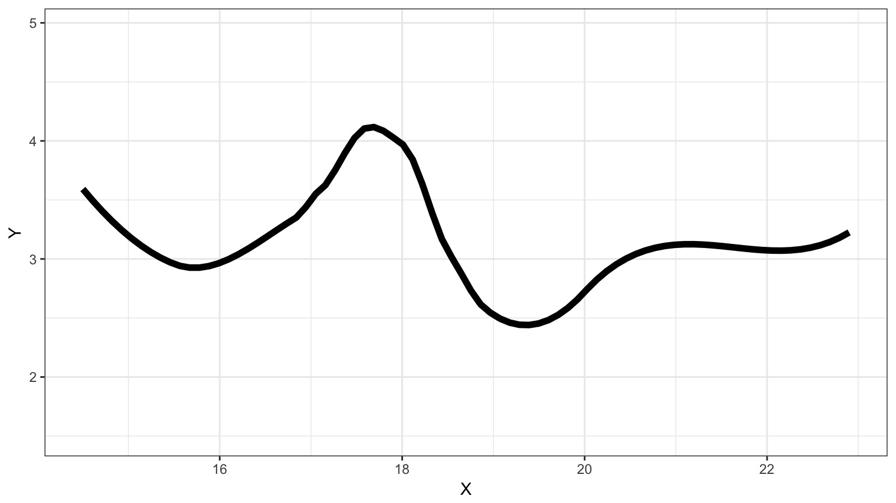
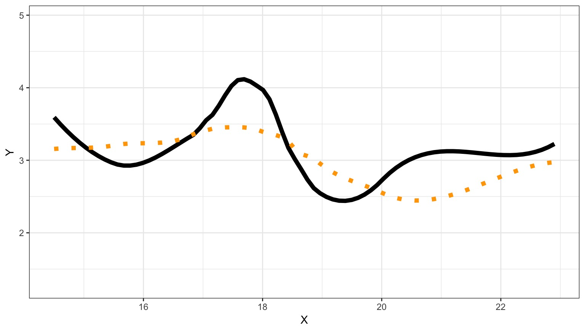
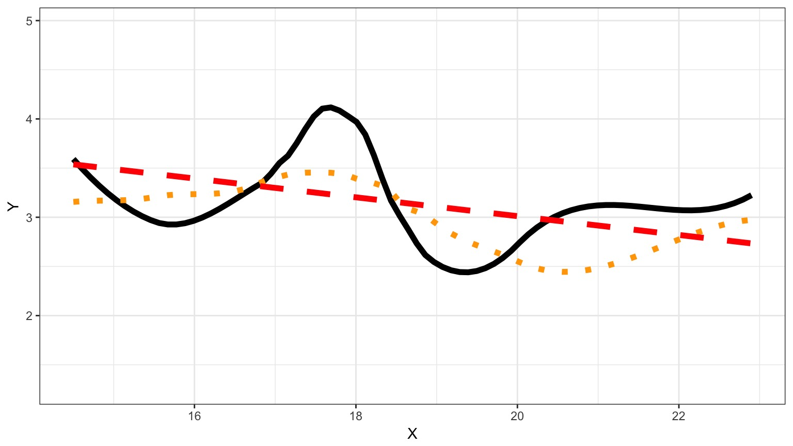
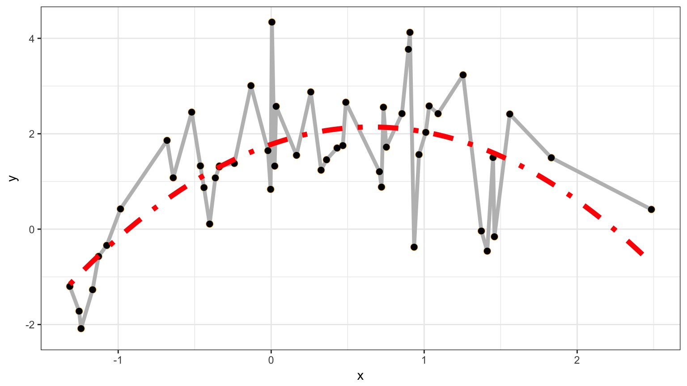
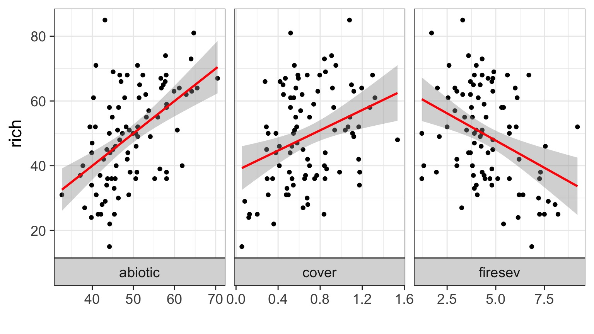
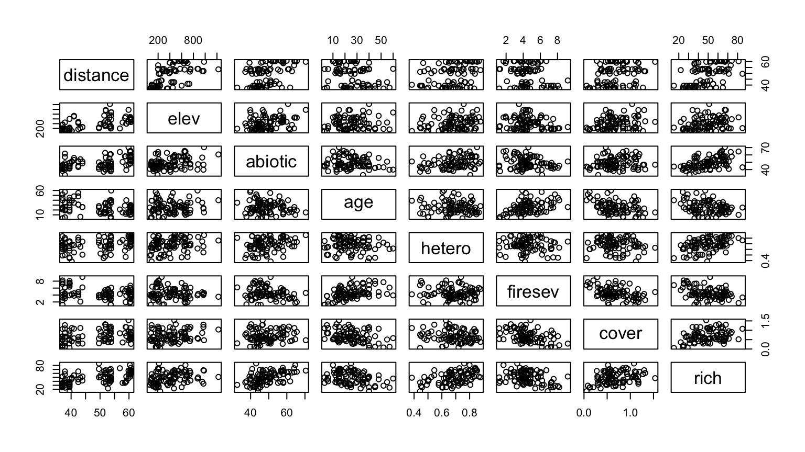
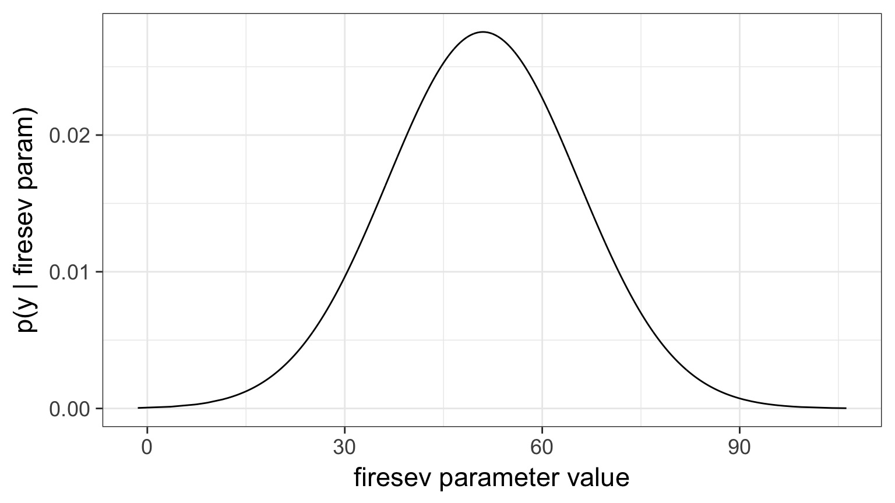

Information Theoretic Approaches to Model Selection
Model Selection in a Nutshell
The Frequentist P-Value testing framework emphasizes the evaluation of a single hypothesis - the null. We evaluate whether we reject the null.
This is perfect for an experiment where we are evaluating clean causal links, or testing for a a predicted relationship in data.
Often, though, we have multiple non-nested hypotheses, and wish to evaluate each. To do so we need a framework to compare the relative amount of information contained in each model and select the best model or models. We can then evaluate the individual parameters.
Suppose this is the Truth

We Can Fit a Model To Descibe Our Data, but it Has Less Information

We Can Fit a Model To Descibe Our Data, but it Has Less Information

Information Loss and Kullback-Leibler Divergence
Information Loss(truth,model) = L(truth)(LL(truth)-LL(model))
Two neat properties:
- Comparing Information Loss between model1 and model2, truth drops out as a constant!
- We can therefore define a metric to compare Relative Information Loss
Defining an Information Criterion
Akaike’s Information Criterion - lower AIC means less information is lost by a model \[AIC = -2log(L(\theta | x)) + 2K\]
Balancing General and Specific Truths
Which model better describes a general principle of how the world works? 
How many parameters does it take to draw an elephant?
But Sample Size Can Influence Fit…
\[AIC = -2log(L(\theta | x)) + 2K\]
\[AICc = AIC + \frac{2K(K+1)}{n-K-1}K\]
Using AIC
How can we Use AIC Values?
\[\Delta AIC = AIC_{i} - min(AIC)\]- \(\Delta\) AIC \(<\) 2 implies that two models are similar in their fit to the data
- \(\Delta\) AIC between 3 and 7 indicate moderate, but less, support for retaining a model
- \(\Delta\) AIC \(>\) 10 indicates that the model is very unlikely
What causes species richness?
- Distance from fire patch
- Elevation
- Abiotic index
- Patch age
- Patch heterogeneity
- Severity of last fire
- Plant cover
Many Things may Influence Species Richness

Implementing AIC: Create Models
k_abiotic <- lm(rich ~ abiotic, data=keeley)
k_firesev <- lm(rich ~ firesev, data=keeley)
k_cover <- lm(rich ~ cover, data=keeley)Implementing AIC: Compare Models
AIC(k_abiotic)[1] 722.2085AIC(k_firesev)[1] 736.0338AIC(k_cover)[1] 738.796What if You Have a LOT of Potential Drivers?

7 models alone with 1 term each
127 possible without interactions.

A Quantitative Measure of Relative Support
\[w_{i} = \frac{e^{\Delta_{i}/2 }}{\displaystyle \sum^R_{r=1} e^{\Delta_{i}/2 }}\]
Where \(w_{i}\) is the relative support for model i compared to other models in the set being considered.
Model weights summed together = 1
Begin with a Full Model
keeley_full <- lm(rich ~ elev + abiotic + hetero +
distance + firesev +
age + cover,
data = keeley)We use this model as a jumping off point, and construct a series of nested models with subsets of the variables.
Evaluate using AICc Weights!
Models with groups of variables
keeley_soil_fire <- lm(rich ~ elev + abiotic + hetero +
distance + firesev,
data = keeley)
keeley_plant_fire <- lm(rich ~ distance + firesev +
age + cover,
data = keeley)
keeley_soil_plant <- lm(rich ~ elev + abiotic + hetero +
age + cover,
data = keeley)One Factor Models
keeley_soil <- lm(rich ~ elev + abiotic + hetero,
data = keeley)
keeley_fire <- lm(rich ~ distance + firesev,
data = keeley)
keeley_plant <- lm(rich ~ age + cover,
data = keeley)Null Model
keeley_null <- lm(rich ~ 1,
data = keeley)Now Compare Models Weights
| Modnames | K | AICc | Delta_AICc | ModelLik | AICcWt | LL | |
|---|---|---|---|---|---|---|---|
| 1 | full | 9 | 688.162 | 0.000 | 1.000 | 0.888 | -333.956 |
| 3 | soil_fire | 7 | 692.554 | 4.392 | 0.111 | 0.099 | -338.594 |
| 4 | soil_plant | 7 | 696.569 | 8.406 | 0.015 | 0.013 | -340.601 |
| 7 | fire | 4 | 707.493 | 19.331 | 0.000 | 0.000 | -349.511 |
| 2 | plant_fire | 6 | 709.688 | 21.526 | 0.000 | 0.000 | -348.338 |
| 5 | soil | 5 | 711.726 | 23.564 | 0.000 | 0.000 | -350.506 |
| 6 | plant | 4 | 737.163 | 49.001 | 0.000 | 0.000 | -364.346 |
| 8 | null | 2 | 747.254 | 59.092 | 0.000 | 0.000 | -371.558 |
So, I have some sense of good models? What now?

Variable Weights
How to I evaluate the importance of a variable?
Variable Weight = sum of all weights of all models including a variable. Relative support for inclusion of parameter in models.
Importance values of 'firesev':
w+ (models including parameter): 0.99
w- (models excluding parameter): 0.01 Model Averaged Parameters
\[\hat{\bar{\beta}} = \frac{\sum w_{i}\hat\beta_{i}}{\sum{w_i}}\]
\[var(\hat{\bar{\beta}}) = \left [ w_{i} \sqrt{var(\hat\beta_{i}) + (\hat\beta_{i}-\hat{\bar{\beta_{i}}})^2} \right ]^2\]
Buckland et al. 1997
Model Averaged Parameters
Multimodel inference on "firesev" based on AICc
AICc table used to obtain model-averaged estimate with shrinkage:
K AICc Delta_AICc AICcWt Estimate SE
full 9 688.16 0.00 0.89 -1.02 0.80
plant_fire 6 709.69 21.53 0.00 -1.39 0.92
soil_fire 7 692.55 4.39 0.10 -1.89 0.73
soil_plant 7 696.57 8.41 0.01 0.00 0.00
soil 5 711.73 23.56 0.00 0.00 0.00
plant 4 737.16 49.00 0.00 0.00 0.00
fire 4 707.49 19.33 0.00 -2.03 0.80
null 2 747.25 59.09 0.00 0.00 0.00
Model-averaged estimate with shrinkage: -1.09
Unconditional SE: 0.84
95% Unconditional confidence interval: -2.74, 0.56Model Averaged Predictions
newData <- data.frame(distance = 50,
elev = 400,
abiotic = 48,
age = 2,
hetero = 0.5,
firesev = 10,
cover=0.4)
Model-averaged predictions on the response scale
based on entire model set and 95% confidence interval:
mod.avg.pred uncond.se lower.CL upper.CL
1 31.666 6.136 19.64 43.69295% Model Confidence Set
Confidence set for the best model
Method: raw sum of model probabilities
95% confidence set:
K AICc Delta_AICc AICcWt
full 9 688.16 0.00 0.89
soil_fire 7 692.55 4.39 0.10
Model probabilities sum to 0.99 Renormalize weights to 1 before using confidence set for above model averaging techniques
Is AIC all there is?
Variations on a Theme: Other IC Measures
For overdispersed count data, we need to accomodate the overdispersion parameter
\[QAIC = \frac{-2log(L(\theta | x))}{\hat{c}} + 2K\]
where \(\hat{c}\) is the overdispersion parameter
AIC v. BIC
Many other IC metrics for particular cases that deal with model complexity in different ways. For example \[AIC = -2log(L(\theta | x)) + 2K\]
Lowest AIC = Best Model for Predicting New Data
Tends to select models with many parameters
\[BIC = -2log(L(\theta | x)) + K ln(n)\]
Lowest BIC = Closest to Truth
- Derived from posterior probabilities
Information Criteria & Bayes
- In Bayes, \(AIC = -2log(y | p(\hat{\theta} )) + 2K\)
- Uses mean of the posterior of all parameters
- Ignores the full distribution of parameters
Introducing Pointwise Predictive Densities
- For all values of a parameter from our MCMC simulations, each \(y_i\) has a density
- This density provides information about the predictive ability of a model
- Consider a Bayesian version of the
keeley_firesevmodel
Example: Probability of First Richness Value over 4000 Draws

Log-Pointwise Predictive Density
- Summarizes predictive accuracy of model to data
- Involves likelihoods of modeled parameters given the data
- Can get a measure of its variance as well
\[ computed\;\; lppd = \sum_{i=1}^{n}\left(log\sum_{s=1}^{S}\frac{1}{S}\;p(y_{i}|\theta^{S})\right)\]
Model Complexity
- Number of parameters is not sufficient for more complex model structure
- But, with more parameters comes more variables in the lppd
- We can use this to estimate the effective number of parameters
- For Linear Models, this should be ~ K
\[p_{waic} = \sum_{i=1}^{n}var(log(p(y_{i} | \theta^{S})))\]
Widely Applicable Information Criteria
\[\large WAIC = -2*LLPD + 2p_{WAIC}\]- Familiar, no?
- Works just the same as AIC, etc
- Also has an estimate of SD to evaluate overlap between models
Computed from 4000 by 90 log-likelihood matrix
Estimate SE
elpd_waic -367.7 5.0
p_waic 2.5 0.4
waic 735.4 10.0Cautionary Notes
AIC analyses aid in model selection. One must still evaluate parameters and parameter error.
Your inferences are constrained solely to the range of models you consider. You may have missed the ’best’ model.
All inferences MUST be based on a priori models. Post-hoc model dredging could result in an erroneous ’best’ model suited to your unique data set.